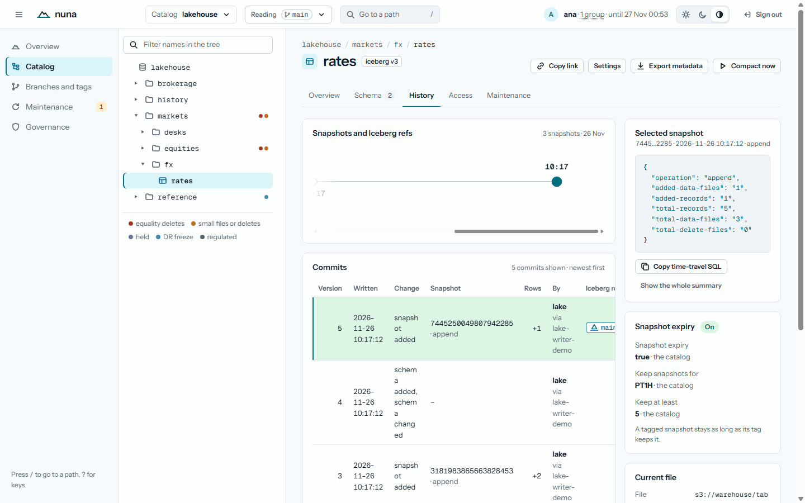

Read an earlier version of a table
Find the snapshot you want on the table's History tab, then read it by snapshot id, by time or by an Iceberg tag from Spark, Trino or PyIceberg.
Each commit that writes data adds a snapshot to the table. An engine can read any snapshot the table still lists: by its id, by the time it was current, or by an Iceberg branch or tag inside the table's metadata. This is time travel within one table. To read the whole catalog as it was, read through a catalog tag instead (Keep a point in time with a tag).
Before you begin
- Your groups hold
selecton the table. Reading an earlier snapshot needs nothing more than reading the current one. - The snapshot still exists. Snapshot expiry removes snapshots older than the table's
snapshot-expiry.max-snapshot-age, keeping at leastsnapshot-expiry.min-snapshots-to-keep; a snapshot an Iceberg tag names stays as long as the tag keeps it (Set a catalog's maintenance policy).
Find the snapshot
-
Open the table and select its History tab.
Snapshots and Iceberg refs draws the snapshots on a line, newest on the right, with the table's own branches and tags marked. Commits lists each commit, newest first, with its Version, when it was Written, the Change, the Snapshot it added, Rows, By whom and its Iceberg refs.
-
Select a snapshot.
Selected snapshot shows its summary (Show the whole summary shows every field), and Copy time-travel SQL copies a query that reads it.

Read it
SELECT * FROM trading.equities.fills VERSION AS OF 7210934412873551003;
SELECT * FROM trading.equities.fills TIMESTAMP AS OF '2026-11-25 18:00:00';
SELECT * FROM trading.equities.fills VERSION AS OF 'month-end';To name a snapshot for later, make an Iceberg tag on the table. A commit that makes, moves or removes one changes only data bookkeeping, so it needs write on the table.
ALTER TABLE trading.equities.fills CREATE TAG `month-end`;SELECT * FROM trading.equities.fills FOR VERSION AS OF 7210934412873551003;This is the form the console's Copy time-travel SQL copies.
fills = catalog.load_table("equities.fills")
by_id = fills.scan(snapshot_id=7210934412873551003).to_arrow()
by_tag = fills.scan(snapshot_id=fills.snapshot_by_name("month-end").snapshot_id).to_arrow()
by_time = fills.scan(snapshot_id=fills.snapshot_as_of_timestamp(1764093600000).snapshot_id).to_arrow()snapshot_as_of_timestamp takes milliseconds since the epoch.
An Iceberg branch or tag is a named snapshot inside one table's metadata file; an engine makes it with ALTER TABLE … CREATE TAG and reads it with VERSION AS OF. A catalog branch or tag (trading@eod-2026-11-25) is different: it chooses which metadata file every table reads. The catalog never uses Iceberg refs for its own.
If it fails
| What you see | Why | What to do |
|---|---|---|
| The engine says the snapshot or version cannot be found. | Snapshot expiry has removed it, or the id is from another table. | Pick a snapshot the History tab still lists. To keep one, tag it before it ages out. |
| A time before the table's oldest snapshot is refused by the engine. | No snapshot was current then. | Use a later time. |
403 ForbiddenException naming select | Your groups lack select on the table. | Ask a grant admin (Grant and revoke access). |
The engines' own messages for an expired snapshot or a time before the first snapshot are the engines', not nuna's, and were not captured here.
See also
- Keep a point in time with a tag: the whole catalog at one point.
- The table page: the History tab and every other tab.
- Set a catalog's maintenance policy: how long snapshots are kept.
- Spark, Trino and PyIceberg: setting each engine up.
How this page was checked
Written from catalog-server/src/main/resources/nuna/ui/table.js, catalog-tests-engines/README.md ("Time travel", "Branches and write-audit-publish"), catalog-server/src/main/java/nuna/catalog/server/rest/Guard.java and docs/refs.md, checked against commit b3e8582f on 2026-11-26.
The Spark and PyIceberg forms are those the engine tests run; the Trino form is the one the console copies. Nothing was run against the local demo for this page.